건축설비기사 (2010-05-09 기출문제)
1과목: 건축일반
1. 침실계획 시 고려 사항으로 옳지 않은 것은?
- 사적 생활을 보장할 수 있게 한다.
- 침실의 면적은 실내의 자연환기횟수를 고려하여 산출한다.
- 노인침실은 일조가 충분한 곳에 면하게 한다.
- 현관과 가깝게 배치해야 동선상 유리하다.
(정답률: 87%)

2. 목구조에서 평보를 대공에 달아맬 때 쓰이는 보강철물은 어는 것인가?
- ㄱ자쇠
- 안장쇠
- 쐐기
- 감잡이쇠
(정답률: 58%)
3. 열환경 지표 중 기온과 주벽의 복사열 및 기류의 영향을 조합시킨 지표로서 습도의 영향이 고려되어 있지 않은 것은?
- 작용온도
- 등온지수
- 유효온도
- 합성온도
(정답률: 63%)
4. 다음 중 용어와 단위가 잘못 짝지어진 것은?
- 음압 : Pa
- 소음레벨 : dB
- 광속 :lx
- 열관류율 : W/m2∙K
(정답률: 59%)
5. 병원의 건축계획에 관한 설명 중 옳지 않은 것은?
- 수술부는 에너지 사용량이 크므로 공조 재순환이 바람직하다.
- 위생기구 손잡이를 감지식으로 한다.
- 감염으로부터 보호받아야 할 부서에 갱의실을 두고 다른 부문과는 분리시킨다.
- 종합병원의 건축군을 크게 외래부, 병동부, 부속진료부로 나눌 수 있다.
(정답률: 98%)
6. 층고가 4m인 박물관에 계단을 대체하여 경사로를 설치하고자 한다. 최소 몇 m의 수평거리가 필요한가?
- 18m
- 24m
- 32m
- 48m
(정답률: 72%)
7. 상점 진열창의 눈부심(glare)을 방지하는 대책으로 옳지 않는 것은?
- 차양을 달아서 외부에 그늘을 주어 내부보다 어둡게 한다.
- 야간에는 눈에 입사하는 광속(光速)을 크게 한다.
- 특수한 곡면 유리를 사용한다.
- 유리면을 경사지게 하여 반사각을 조정한다.
(정답률: 87%)
8. 다음 중 대형창호에 멀리온(mullion)을 설치하는 가장 주된 이유는?
- 기밀성을 양호하게 하기 위하여
- 채광성을 양호하게 하기 위하여
- 차음성을 양호하게 하기 위하여
- 진동에 의한 유리파손을 방지하기 위하여
(정답률: 86%)
9. 일영계획에 관한 설명 중 옳지 않은 것은?
- 일영은 태양의 방위와 반대방향에 생긴다.
- 일영곡선은 해당지역의 위도, 시간별 태양고도에 따라 다르다.
- 일영의 길이는 태양의 고도에 의하여 결정된다.
- 일영이 생기는 방향은 계절이 바뀌어도 변함이 없다.
(정답률: 87%)
10. 단열에 관한 설명 중 옳지 않은 것은?
- 일반적으로 열전도율이 작은 재료를 사용하는 것이 단열효과가 좋다.
- 공기층은 기밀성이 떨어져도 단열효과에는 영향이 없다.
- 단열재에 수분이 침투하면 단열성이 매우 나빠진다.
- 10cm 공기층을 1개층 설치하는 것보다 5cm 공기층을 2개층 설치하는 것이 단열에 유리하다.
(정답률: 89%)
11. 인장력만으로 외력에 저항하는 건축구조 형식은?
- 스페이스 프레임구조
- 아치구조
- 셸구조
- 현수구조
(정답률: 61%)
12. 기초의 부동침하를 방지하는데 효과적인 방법이 아닌 것은?
- 기초 상호간을 지중보로 연결한다.
- 가급적 건물의 중량을 무겁게 한다.
- 구조 전체의 하중을 기초에 균등히 분포시킨다.
- 지하실을 강성체로 설치한다.
(정답률: 90%)
13. 콘크리트의 인장강도는 압축강도의 약 몇 %인가?
- 10%
- 30%
- 50%
- 80%
(정답률: 35%)
14. 상점의 퍼사드(facade) 구성과 관련된 5가지 광고 요소에 해당되지 않는 것은?
- Imagination
- Attention
- Desire
- Memory
(정답률: 71%)
15. 200명인 회사에서 전용사무소 건물의 필요 바닥면적으로 가장 적당한 것은?
- 1,000m2
- 2,000m2
- 3,000m2
- 4,000m2
(정답률: 70%)
16. 병원의 평면계획상 구급동선은 어디에 연결되어야 하는가?
- 병동부
- 외래부
- 중앙진료부
- 관리부
(정답률: 80%)
17. 도서관의 건축계획으로 옳지 않은 것은?
- 서고는 증축을 고려하여 계획한다.
- 열람실은 서고와 최대한 멀리 떨어져 위치시키는 것이 좋다.
- 아동 열람실은 자유롭게 책을 꺼내볼 수 있도록 자유개가식으로 한다.
- 참고실은 안정된 분위기를 갖고 일반열람실과는 별실로 목록실, 출납대 근처에 설치한다.
(정답률: 75%)
18. 다음 중 블록의 빈 속에 철근을 배근하고 콘크리트를 사춤하여 보강한 가장 이상적인 블록구조는?
- 조적식 블록조
- 거푸집 블록조
- 블록 장막벽
- 보강콘크리트 블록조
(정답률: 85%)
19. 공동주택의 건물단면형식 중 주거단위의 단면을 단층형과 복층형에서 동일층으로 하지 않고 반 층씩엇나게 하는 형식은?
- 스킵 플로어 형식
- 필로티 형식
- 오픈 형식
- 플랫 형식
(정답률: 93%)
20. 아파트건축의 성립요건이 아닌 것은?
- 토지가 상승에 의한 저렴한 주거공급의 필요성
- 현대인의 다양하고 개성적인 생활양식의 수용
- 도시행활자의 이동성 증가에 따른 편의성 제공
- 단독주거로는 해결할 수 없는 넓은 옥외공간과 질높은 주거환경 조성
(정답률: 77%)
2과목: 위생설비
21. 온도 35℃, 길이 100m 인 동관에 탕이 흘러 60℃가 되었을 때, 동관의 팽창량은? (단, 동관의 선팽창계수는 0.171×10-4 이다.)
- 0.0017mm
- 0.06mm
- 0.10mm
- 42.75mm
(정답률: 64%)
22. 어느 건물에 옥외소화전이 5개 설치되어 있다. 이 건물에서 옥외소화전설비의 수원은 저수량이 최소 얼마 이상이어야 하는가?
- 7m3
- 14m3
- 85m3
- 42m3
(정답률: 68%)
23. 증기를 사일렌서(sileneer) 등에 의해 물과 혼합시켜 탕을 만드는 급탕방식은?
- 순간식
- 저탕식
- 기수혼합식
- 간접가열식
(정답률: 83%)
24. 도시가스로 주로 공급되는 액화천연가스(LNG)에 대한 설명 중 옳지 않은 것은?
- 공기보다 가볍다.
- 아황산가스, 매연 등의 오염이 없다.
- 천연가스를 정제해서 얻은 메탄을 주성분으로 하는 가스를 냉각시켜 액화한 것이다.
- 발열량이 액화석유가스(LPG)보다 높다.
(정답률: 79%)
25. 다음과 같은 조건에서 연면적이 20,000m2인 사무소에 필요한 1일의 급수량(사용수량)은?
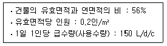
- 33.6 m3/d
- 43.6 m3/d
- 336 m3/d
- 406 m3/d
(정답률: 72%)
26. 아파트에 설치하는 저수조에 관한 설명으로 옳지 않은 것은?
- 저수조의 맨홀부분은 건축물(천정 및 보 등)로부터 100cm 이상 떨어져야 한다.
- 물의 유출구는 유입구의 윗부분에 설치하여 바닥의 침전물이 유출되지 아니하도록 한다.
- 저수조의 공기정화를 위한 통기관과 물의 수위조절을 위한 월류관을 설치한다.
- 저수조의 유입배관에는 배수용 밸브를 설치한다.
(정답률: 63%)
27. 배수 배관에서 청소구를 원칙적으로 설치하여야 하는 곳이 아닌 것은?
- 배수수평주관의 기점
- 배수수직관의 최상부
- 배수수평지관의 기점
- 배수수평주관과 옥외배수관의 접속장소와 가까운 곳
(정답률: 83%)
28. 어떤 정화조에서 유입수의 BOD가 150(mg/L), 유출수의 BOD가 60(mg/L)일 때, 이 정화조의 BOD 제거율은?
- 30%
- 45%
- 60%
- 90%
(정답률: 77%)
29. 통기관의 관경 결정에 대한 설명 중 옳지 않은 것은?
- 각개통기관의 관경은 접속하는 배수관 관경의 1/2이상으로 한다.
- 루프통기관의 관경은 접속하는 배수 수평지관과 통기수직관의 관경 중 작은 쪽 관경의 1/2 이상으로 한다.
- 결합통기관의 관경은 통기수직관과 배수 수직관 중 큰 쪽의 관경 이상으로 한다.
- 신정통기관의 관경은 배수 수직관의 관경보다 작게해서는 안된다.
(정답률: 62%)
30. 펌프의 캐비테이션에 대한 설명 중 옳지 않은 것은?
- 비정상적인 소음과 진동이 발생한다.
- 캐비테이션을 방지하기 위해 펌프의 흡입양정을 크게 한다.
- 캐비테이션이 진행되면 펌프의 양수량, 양정 및 효율이 저하되어 간다.
- 캐비테이션을 방지하기 위해 설계상의 펌프 운전범위내에서 항상 유효 NPSH가 필요 NPSH보다 크게 되도록 배관계획을 한다.
(정답률: 71%)
31. 다음 중 급수배관의 관경결정과 관계없는 것은?
- 관균등표
- 확대관 저항계수
- 마찰저항선도
- 동시사용률
(정답률: 58%)
32. 다음 설명에 알맞은 급수방식은?
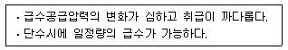
- 수도직결방식
- 고가수조방식
- 압력수조방식
- 펌프직송방식
(정답률: 62%)
33. 다음의 밸브에 관한 설명 중 옳은 것은?
- 슬루스 밸브는 주로 유량조절용에 사용된다.
- 글로브 밸브는 밸브를 완전히 열었을 때 유체 흐름의 단면적 변화가 없어서 마찰저항이 없다.
- 리프트형 체크 밸브는 수평배관에 사용된다.
- 버터 플라이 밸브는 기밀성 좋아서 고압유체의 흐름 단속용에 주로 사용된다.
(정답률: 57%)
34. 배수 수직관 내가 부압으로 되는 곳에 배수 수평지관이 접속되어 있는 경우, 배수 수평지관 내의 공기가 수직관으로 유인되어 봉수가 파괴되는 현상은?
- 유도사이폰 작용
- 자기사이폰 작용
- 모세관 현상
- 증발 현상
(정답률: 69%)
35. 다음 중 기구배수 부하단위수가 가장 큰 기구는?
- 세정밸브식 대변기
- 스톨형 소변기
- 청소싱크
- 세탁싱크
(정답률: 68%)
36. 급탕설비에서 팽창관의 역할에 대한 설명 중 옳지 않은 것은?
- 보일러의 자동 급수조절 장치이다.
- 안전밸브와 같은 역할을 한다.
- 보일러내의 공기나 증기를 배출시킨다.
- 물의 온도상승에 따른 체적 팽창을 흡수한다.
(정답률: 62%)
37. 연결살수설비의 송수구에 관한 기준 내용으로 옳지 않은 것은?
- 소방차가 쉽게 접근할 수 있고 노출된 장속에 설치하는 것이 원칙이다.
- 지면으로부터 높이가 0.5m 이상 1.0m 이하의 위치에 설치하여야 한다.
- 개방형 헤드를 사용하는 송수구의 호스접결구는 각 송수구역마다 설치하는 것이 원칙이다.
- 송수구는 구경 32mm의 쌍구형으로 설치하여야 한다.
(정답률: 78%)
38. 35m의 높이에 있는 고가수조에 유속 2m/sec으로 양수량 10m3/h의 물을 양수하려고 할 때 펌프의 구경은?
- 약 25mm
- 약 42mm
- 약 52mm
- 약 62mm
(정답률: 54%)
39. 다음 중 고층건물에서 급수설비의 조닝 목적과 가장 관계가 먼 것은?
- 배관의 적절한 수압유지
- 공사비의 절감
- 소음과 진동의 방지
- 기구 부속품의 파손방지
(정답률: 69%)
40. 위생도기에 대한 설명 중 옳지 않은 것은?
- 흡수성(吸收性)이 높다.
- 산, 알칼리에 침식되지 않는다.
- 오물이 부착되기 어려우며, 청소가 용이하다.
- 복잡한 구조의 것을 일체화하여 제작할 수 있다.
(정답률: 83%)
3과목: 공기조화설비
41. 다음의 설명 중 옳은 것은?
- 코일의 열수가 증가할수록 바이패스 팩터는 커진다.
- 20℃의 습공기에 90℃의 온수로 분무가습하였을 경우 건구온도는 내려간다.
- 코일을 통과하는 풍속이 커지면 바이패스 팩터는 감소한다.
- 습공기의 노점온도는 습도가 낮을수록 높아진다.
(정답률: 34%)
42. 다음과 같은 조건에 있는 벽체의 실내표면온도는?
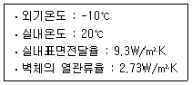
- 16.5℃
- 11.2℃
- 12.2℃
- 13.5℃
(정답률: 58%)
43. 온수배관에 관한 설명 중 옳지 않은 것은?
- 배관의 신축을 고려한다.
- 배관재료는 내식성을 고려한다.
- 온수배관에는 공기가 고이지 않도록 구배를 준다.
- 온수보일러의 팽창관에는 게이트 밸브를 설치한다.
(정답률: 76%)
44. 증기배관에서의 증기유속으로 가장 적합한 것은?
- 저압 증기관 : 최소 10m/s, 고압 증기관 : 최소 70m/s
- 저압 증기관 : 최소 18m/s, 고압 증기관 : 최대 60m/s
- 저압 증기관 : 최대 25m/s, 고압 증기관 : 최소 55m/s
- 저압 증기관 : 최대 35m/s, 고압 증기관 : 최대 45m/s
(정답률: 36%)
45. 냉각탑 주위의 배관에 대한 설명 중 옳지 않은 것은?
- 냉각수 배관은 일반적으로 개방회로이다.
- 펌프의 위치는 응축기의 흡입측에 설치한다.
- 냉각탑 입구측 배관에 스트레이너를 설치한다.
- 냉각탑 주위의 세균 감염에 유의하여야 한다.
(정답률: 49%)
46. 건구온도 33℃, 절대습도 0.021kg/kg'의 공기 20kg과 건구온도 25℃, 절대습도 0.012kg/kg'의 공기 80kg을 단열혼합하였을 때, 혼합공기의 건구온도와 절대습도는?
- 건구온도 : 26.6℃, 절대습도 : 0.0138kg/kg'
- 건구온도 : 26.6℃, 절대습도 : 0.0192kg/kg'
- 건구온도 : 31.4℃, 절대습도 : 0.0138kg/kg'
- 건구온도 : 31.4℃, 절대습도 : 0.0192kg/kg'
(정답률: 49%)
47. 공기조화방식 중 유인 유닛방식에 대한 설명으로 옳은 것은?
- 외기냉방의 효과는 크나 부하변동에 따른 적응성이 낮다.
- 전공기방식으로 배수관이 필요없어 누수의 우려가 없다.
- 고속덕트를 사용하므로 덕트 스페이스를 작게 할 수 있다.
- 각 유닛의 개별제어가 불가능하다.
(정답률: 50%)
48. 다음의 공기조화방식 중 에너지 절약측면에서 가장 불리한 것은?
- 단일덕트방식
- 각층유닛방식
- 유인유닛방식
- 이중덕트방식
(정답률: 49%)
49. 그림과 같은 전열교환기의 전열효율을 올바르게 나타낸 것은? (단, 난방이 경우이며, X1, X2, X3, X4는 각 공기상태의 엔탈피를 나타낸다.)
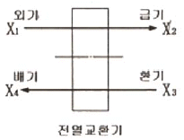
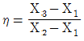
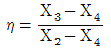
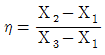
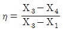
(정답률: 74%)
50. 에어와셔의 통과공기량이 20,000kg/h, 수량(水量)이 15,600kg/h이고, 입구공기의 엔탈피 23.9kJ/kg, 출구공기의 엔탈피 26.8kJ/kg 일 때, 에어와셔의 입구수온은? (단, 에어와셔의 출구 수온은 9.3℃, 물의 비열은 4.19kJ/kg∙K 이다.)
- 8.4℃
- 9.7℃
- 10.2℃
- 11.5℃
(정답률: 39%)
51. 보일러에 대한 설명 중 옳지 않은 것은?
- 주철제 보일러는 규모가 비교적 작은 건물의 난방용으로 사용된다.
- 노통 연관보일러는 부하변동의 적응성이 낮으나 예열시간은 짧다.
- 수관보일러는 대형건물 또는 병원이나 호텔 등과 같이 고압증기를 다량 사용하는 곳에 사용된다.
- 입형보일러는 설치 면적이 작고 취급은 용이하나 사용압력이 낮다.
(정답률: 54%)
52. 중앙식 공기조화기에서 가습기의 형식 선정시 유의사항으로 옳지 않은 것은?
- 공기조화기(AHU)에 가습기를 배치할 때 코일의 전∙후 위치를 검토한다.
- 가습과정의 열수분비를 확인하여 저온의 공기도 가습효과가 큰지 확인한다.
- 분무노즐을 사용하는 경우는 분출압력이 높으면 가습효율은 증가되지만 소음이 증가되므로 소음대책도 검토한다.
- 수분무의 경우 가습효율이 높으므로 엘리미네이터의 설치에 대한 고려를 하지 않는다.
(정답률: 71%)
53. 건구온도 32℃, 절대습도 0.025kg/kg'인 습공기의 엔탈피는? (단, 건공기 정압비열 1.01kJ/kg∙K, 수증기 정압비열 1.85kJ/kg∙K, 0℃에서 포화수의 증발잠열 2501kJ/kg이다.)
- 71.12 kJ/kg
- 96.33 kJ/kg
- 140.62 kJ/kg
- 182.52 kJ/kg
(정답률: 57%)
54. 덕트의 단면적을 확대시킬 경우 변화가 없는 것은? (단, 덕트의 마찰손실은 무시)
- 풍속
- 동압
- 정압
- 전압
(정답률: 49%)
55. 축열시스템에 대한 설명으로 옳지 않은 것은?
- 냉동기의 용량을 감소시킬 수 있다.
- 값이 저렴한 심야전력의 이용이 가능하다.
- 호텔의 공공부분과 같이 간헐운전이 심한 경우에는 적용할 수 없다.
- 빙축열 시스템은 냉각을 위한 냉동기, 축열을 위한 빙축열조, 외부와의 열교환을 위한 열교환기 등으로 구성된다.
(정답률: 73%)
56. 덕트의 치수 결정법에 대한 설명 중 옳지 않은 것은?
- 등속법은 덕트 내의 풍속을 일정하게 유지할 수 있도록 덕트 치수를 결정하는 방법이다.
- 등속법에 의한 덕트는 각 구간마다 압력 손실이 다르므로 송풍기 용량을 구하기 위해서는 전체 구간의 압력손실을 구해야 하는 번거로움이 있다.
- 등속법에 의한 덕트에 많은 풍량을 송풍하면 소음발생이나 덕트의 강도상에 문제가 발생하므로 일정 풍량 이상인 경우 등마찰손실법으로 결정한다.
- 등마찰손실법은 덕트의 단위길이당 마찰손실이 일정한 상태가 되도록 덕트마찰손실선도에 직경을 구하는 방법이다.
(정답률: 50%)
57. 변풍량 유닛(VAV unit) 중 송풍덕트 내의 정압제어가 필요 없고, 유닛의 소음발생이 적으나, 송풍동력을 절감시킬 수 없는 유닛은?
- 바이패스형
- 슬롯형
- 유인형
- 댐퍼형
(정답률: 59%)
58. 실내공간에 있어서 인체의 열방출 경로 중 그 비율이 가장 작은 것은?
- 대류
- 복사
- 전도
- 증발
(정답률: 60%)
59. 다음 설명에 알맞은 환기방식은?
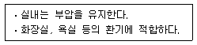
- 급기팬과 배기팬의 조합
- 급기팬과 자연배기의 조합
- 자연급기와 배기팬의 조합
- 자연급기와 자연배기의 조합
(정답률: 72%)
60. 내경 50mm인 원관속을 흐르는 물의 유량은 10.5m3/h 이다. 관의 길이가 10m 일 경우 마찰손실은? (단, 관마찰계수는 0.02 이다.)
- 0.25 mAq
- 0.45 mAq
- 0.62 mAq
- 0.82 mAq
(정답률: 41%)
4과목: 소방 및 전기설비
61. 전열기에 인가되는 전압이 20[%] 상승할 경우, 소비전력은 몇 [%] 증가하는가?
- 20%
- 32%
- 44%
- 50%
(정답률: 30%)
62. 다음 중 투자율의 단위는?
- A/m
- V/m
- F/m
- H/m
(정답률: 47%)
63. 단열 중복형 에스켈레이터에 대한 설명으로 옳은 것은?
- 설치면적이 작고 점포 내를 잘 볼 수 있다.
- 연속적으로 승계할 수 있으나 설치면적이 큰 것이 결점이다.
- 백화점 등에 주로 설치되는 형식으로 승객의 승계가 용이하며 상층으로 고객 유도가 용이하다.
- 승강 모두 연속적으로 승계가 되며 상승과 하강이 서로 바닥면의 반대측에 분리되어 승강구에서 혼잡이 적다.
(정답률: 15%)
64. 다음 설명이 의미하는 것은?
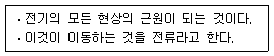
- 양자
- 자유전자
- 중성자
- 원자핵
(정답률: 50%)
65. 건축물 내 변전실에서 사용하는 변압기의 용량을 산정하는데 사용하는 주요 요소(Factor)가 아닌 것은?
- 밀도율
- 부등률
- 부하율
- 수용률
(정답률: 50%)
66. 공조설비의 밸브나 댐퍼의 구동을 위하여 비례제어용으로 주로 사용되는 기기는?
- 히트 펌프
- 서보 모터
- 모듀트럴 모터
- 직동식 전자밸브
(정답률: 54%)
67. 전선의 저항에 대한 설명으로 옳지 않은 것은?
- 저항률의 단위는 [Ωㆍm]이다.
- 저항의 크기는 전선의 길이에 비례한다.
- 저항의 크기는 전선의 단면적에 비례한다.
- 전선의 저항은 전선의 주위온도에 영향을 받는다.
(정답률: 54%)
68. 비상콘센트의 설치 높이에 대한 설명으로 옳은 것은?
- 바닥으로부터 높이 0.5m 이상 1.5m 이하의 위치에 설치한다.
- 바닥으로부터 높이 0.5m 이상 1.8m 이하의 위치에 설치한다.
- 바닥으로부터 높이 0.8m 이상 1.5m 이하의 위치에 설치한다.
- 바닥으로부터 높이 0.8m 이상 1.8m 아하의 위치에 설치한다.
(정답률: 45%)
69. 피뢰침 설비의 접지 저항은 최대 얼마 이하로 하는가?
- 2[Ω]
- 5[Ω]
- 10[Ω]
- 15[Ω]
(정답률: 62%)
70. 농형유도전동기에 대한 설명으로 옳지 않은 것은?
- 구조가 간단하여 취급방법이 간단하다.
- VVVF(Variable Voltage Variable Frequency)방식으로 속도제어가 가능하다.
- 기동전류가 커서 전동기 권선을 과열시키거나 전원전압의 변동을 일으킬 수 있다.
- 슬립링에서 불꽃이 나올 염려가 있기 때문에 인화성 또는 폭발성 가스가 있는 곳에서 사용할 수 없다.
(정답률: 68%)
71. 전력 퓨즈에 대한 설명으로 옳지 않은 것은?
- 릴레이와 변성기가 필요하다.
- 소형으로 큰 차단용량을 가진다.
- 옥내에 시설하는 경우에는 소음기를 부착하는 것이 좋다.
- 일정치 이상의 과전류를 차단하여 전로나 기기를 보호한다.
(정답률: 27%)
72. 유도전동기가 60Hz의 전원에 접속되고 4극 3상인 경우 회전 속도[rpm]는?
- 1600
- 1700
- 1800
- 3600
(정답률: 70%)
73. 다음 중 전하간이 정전유도현상과 가장 관계가 먼 것은?
- 낙뢰
- 정전기
- 전자석
- 전기집진기
(정답률: 45%)
74. 두 지점간의 전하가 갖는 에너지의 차를 의미하는 것은?
- 전압
- 전계
- 전하량
- 정전력
(정답률: 53%)
75. 전기식 자동제어 시스템에서 리미트 조절기의 설정치보다 제어량이 저하되었을 때 리미트 조절기가 주조절기의 동작과 관계없이 조작기를 직접 작동시켜 조작기가 열리거나 운전되도록 하는 제어방법은?
- 상한제어
- 하한제어
- 최소개도제어
- 외기도입제어
(정답률: 56%)
76. 보일러의 자동제어에 해당하지 않는 것은?
- 온도 제어
- 연소 제어
- 급수 제어
- 위치 제어
(정답률: 71%)
77. 축전지 설비에 사용되는 알카리 축전지의 공칭전압은?
- 0.5[V/셀]
- 1.2[V/셀]
- 2[V/셀]
- 2.5[V셀]
(정답률: 70%)
78. 다음 설명에 알맞은 간선 배선방식은?
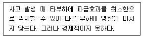
- 수지상식
- 나뭇가지식
- 평행식
- 병용식
(정답률: 41%)
79. 다음 그림의 게이트 기호는 무엇을 나타내는가?
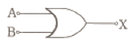
- AND
- OR
- NOT
- NOR
(정답률: 68%)
80. 안전전압이란 회로에 인가된 정격전압이 일정 수준 이하의 낮은 전압으로 인체에 접촉되어도 전기적 충격을 주지 않는 안전한 전압의 크기를 말하는데, 우리나라에서 규정된 안전전압은?
- 20[V]
- 30[V]
- 35[V]
- 50[V]
(정답률: 42%)
5과목: 건축설비관계법규
81. 건축물의 건축허가를 신청하는 경우 에너지절약계획서를 제출하여야 하는 대상 건축물에 속하는 것은?
- 업무시설로서 당해 용도에 사용되는 바닥면적의 합계가 3,000m2 인 건축물
- 숙박시설로서 그 용도에 사용되는 바닥면적의 합계가 1,500m2 인 건축물
- 판매시설로서 그 용도에 사용되는 바닥면적의 합계가 2,000m2 인 건축물
- 교육연구시설 중 연구소로서 당해 용도에 사용되는 바닥면적의 합계가 2,000m2 인 건축물
(정답률: 23%)
82. 다음 중 건축물의 에너지절약 설계기준의 건축부문의 권장사항으로 옳지 않은 것은?
- 공동주택은 인동간격을 넓게 하여 저층부의 일사 수열량을 증대시킨다.
- 건축물의 체적에 대한 외피면적의 비 또는 연면적에 대한 외피면적의 비는 가능한 크게 한다.
- 거실의 층고 및 반자 높이는 실의 용도와 기능에 지장을 주지 않는 범위 내에서 가능한 낮게 한다.
- 건물의 창호는 가능한 작게 설계하고, 특히 열손실이 많은 북측의 창면적은 최소화한다.
(정답률: 73%)
83. 건축물의 바깥쪽으로 나가는 출구로 쓰이는 문을 안여닫이로 해도 되는 건축물의 용도는?
- 판매시설
- 장례식장
- 위락시설
- 종교시설
(정답률: 53%)
84. 대수선의 범위 기준으로 옳지 않은 것은?
- 미관지구에서 건축물의 외부형태를 변경하는 것
- 기둥을 증설 또는 해체하거나 2개 이상 수선 또는 변경하는 것
- 다가구주택의 가구 간 경계벽을 증설 또는 해체하거나 수선 또는 변경하는 것
- 내력벽을 증설 또는 해체하거나 그 벽면적을 30제곱미터 이상 수선 또는 변경하는 것
(정답률: 49%)
85. 다음은 창문 등의 차면시설과 관련된 기준 내용이다. ( )안에 알맞은 숫자는?
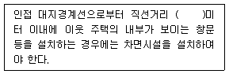
- 1
- 2
- 3
- 4
(정답률: 63%)
86. 다음 중 내화구조에 해당하는 것은?
- 콘크리트블록조의 지붕
- 철근콘크리트조의 벽으로서 두께가 5센티미터인 것
- 철근콘크리트조의 바닥으로서 두께가 7센티미터인 것
- 철근콘크리트조의 기둥으로서 그 작은 지름이 25센티미터인 것
(정답률: 55%)
87. 무창층의 개구부가 갖추어야 할 요건으로 옳지 않은 것은?
- 외부에서 파괴 또는 개방할 수 없을 것
- 개구부는 도로 또는 차량이 진입할 수 있는 빈터를 향할 것
- 개구부의 크기가 지름 50센티미터 이상의 원이 내접할 수 있을 것
- 해당 층의 바닥면으로부터 개구부 밑면까지의 높이가 1.2미터 이내일 것
(정답률: 52%)
88. 지하층의 비상탈출구에 관한 기준 내용으로 옳지 않은 것은?
- 비상탈출구의 유효높이는 1.5m 이상으로 할 것
- 비상탈출구의 유효너비는 0.75m 이상으로 할 것
- 비상탈출구는 출입구로부터 2m 이상 떨어진 곳에 설치할 것
- 비상탈출구의 문은 피난방향으로 열리도록 하고, 실내에서 항상 열 수 있는 구조로 할 것
(정답률: 42%)
89. 다음 중 건축물의 에너지절약설계기준에 따른 기계부문의 권장사항으로 옳지 않은 것은?
- 폐열회수형 환기장치를 설치한다.
- 급수용 펌프의 전동기에는 가변속 제어방식을 채택한다.
- 위생설비 급탕용 저탕조의 설계온도는 70℃ 이상으로 한다.
- 실내공기질을 저하시키지 않는 범위내에서 이코노미이저시스템을 적용한다.
(정답률: 65%)
90. 수동식 소화기 또는 간이소화용구를 설치하여야 하는 특정소방대상물의 연면적 기준은?
- 10m2 이상
- 25m2 이상
- 33m2 이상
- 66m2 이상
(정답률: 44%)
91. 축냉식 전기냉방설비의 설계기준 내용으로 옳지 않은 것은?
- 축열조는 축냉 및 방냉운전을 반복적으로 수행하는데 적합한 재질의 축냉재를 사용해야 한다.
- 자동제어설비는 수동조작이 가능하지 않도록 하여야 하며 감시기능을 갖추어야 한다.
- 열교환기는 시간당 최대냉방열량을 처리할 수 있는 용량이상으로 설치하여야 한다.
- 열교환기는 보온을 철저히 하여 열손실과 결로를 방지하여야 한다.
(정답률: 75%)
92. 옥내에 비상용 승강기 설치시 승강자의 바닥면적은 비상용 승강기 1대에 대하여 최소 얼마 이상이어야 하는가?
- 2제곱미터
- 4제곱미터
- 5제곱미터
- 6제곱미터
(정답률: 66%)
93. 방염성능기준 이상의 실내장식물 등을 설치하여야 하는 특정소방대상물에 속하는 것은? (단, 층수가 10층인 경우)
- 아파트
- 실내수영장
- 종합병원
- 기숙사
(정답률: 40%)
94. 다음 중 건축법상 단독주택에 속하지 않는 것은?
- 다중주택
- 다세대주택
- 다가구주택
- 공관
(정답률: 52%)
95. 건축물을 건축하거나 대수선하는 경우 국토해양부령으로 정하는 구조기준 등에 따라 그 구조의 안전을 확인하여야 하는 대상 건축물에 속하지 않는 것은?
- 층수가 3층인 건축물
- 처마높이가 9미터인 건축물
- 높이가 13미터인 건축물
- 연면적이 500제곱미터인 건축물
(정답률: 30%)
96. 방화관리자를 두어야 하는 특정소방대상물 중 1급 방화관리대상물의 연면적 기준은?
- 5,000m2 이상
- 10,000m2 이상
- 15,000m2 이상
- 20,000m2 이상
(정답률: 22%)
97. 6층 이상의 거실면적의 합계가 11,000m2인 교육연구 및 복지시설에 설치하여야 하는 승용승강기의 최소 대수는? (단, 8인승 승용승강기인 경우)
- 3대
- 4대
- 5대
- 6대
(정답률: 38%)
98. 건축물의 출입구에 설치하는 회전문의 설치기준 내용으로 옳지 않은 것은?
- 계단으로부터 2미터 이상의 거리를 둘 것
- 에스컬레이터로부터 2미터 이상의 거리를 둘 것
- 회전문의 회전속도는 분당회전수가 12회를 넘지 아니하도록 할 것
- 출입에 지장이 없도록 일정한 방향으로 회전하는 구조로 할 것
(정답률: 73%)
99. 다음 중 중수도를 설치ㆍ운영하여야 하는 대상 시설물의 중수도 처리 용량 기준으로 적합한 것은?
- 사용수량의 100분의 10 이상
- 사용수량의 100분의 7 이상
- 사용수량의 100분의 5 이상
- 사용수량의 100분의 3 이상
(정답률: 45%)
100. 외기에 직접 면하고 1층 또는 지상으로 연결된 출입문을 방풍구조로 하여야 하는 것은?
- 공동주택의 출입문
- 너비 1.5m의 출입문
- 사람의 통행을 주목적으로 하지 않는 출입문
- 판매시설 중 상점으로서 바닥면적 300m2의 개별 점포의 출입문
(정답률: 48%)